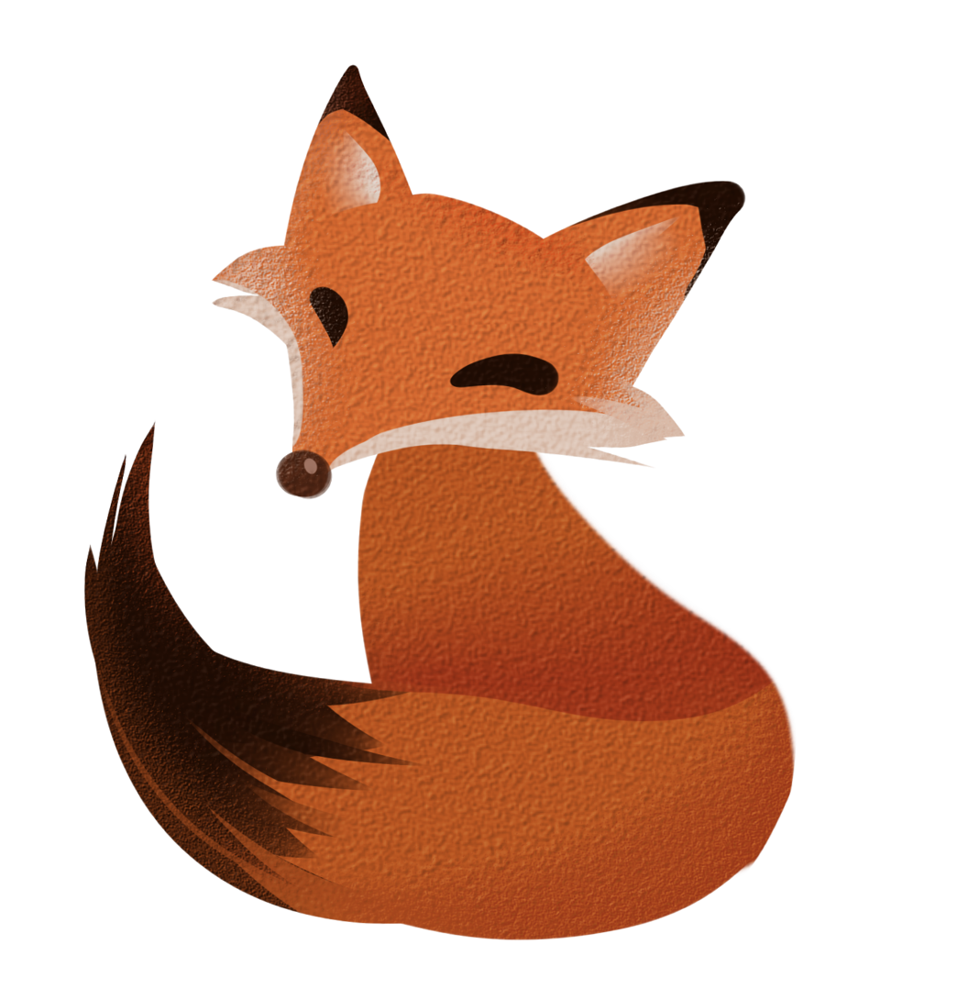

Привет, мой дорогой друг! В ниже ты можешь получить таблицу умножения:
Введи число:
Введи число:
А здесь можно узнать площадь круга:
Введи число:
Введи число:
Это четвертое задание:
Число
Метод
Результат
Описание метода
Лисица рада тебя видеть...
А ты её нет?